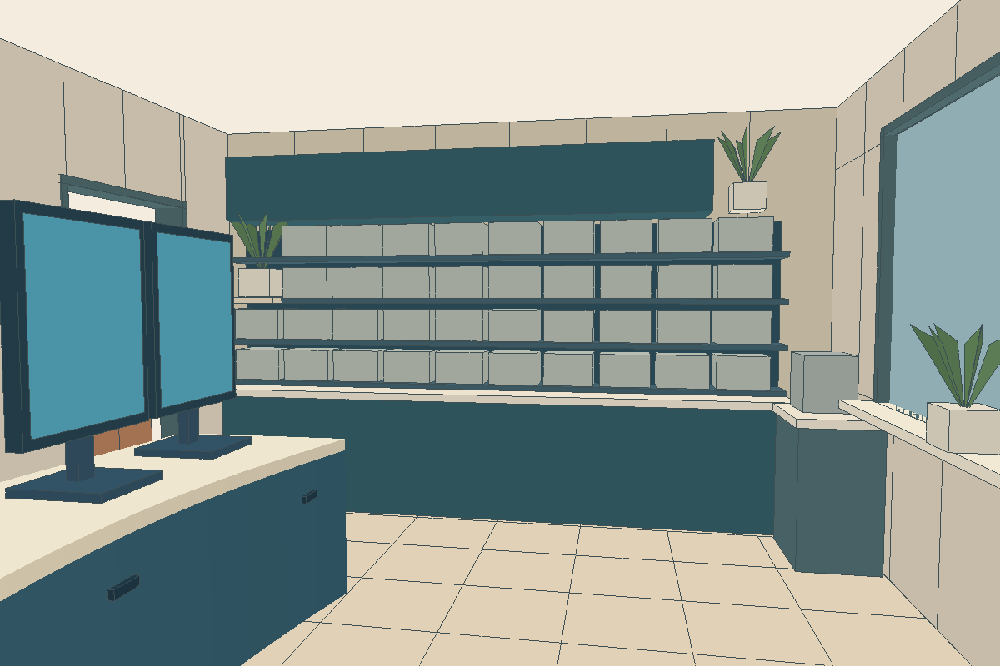
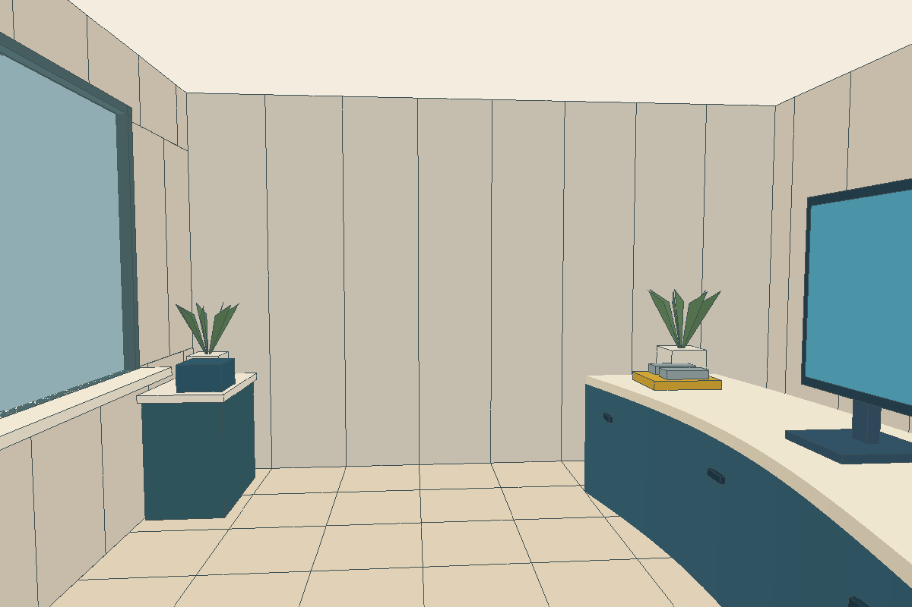
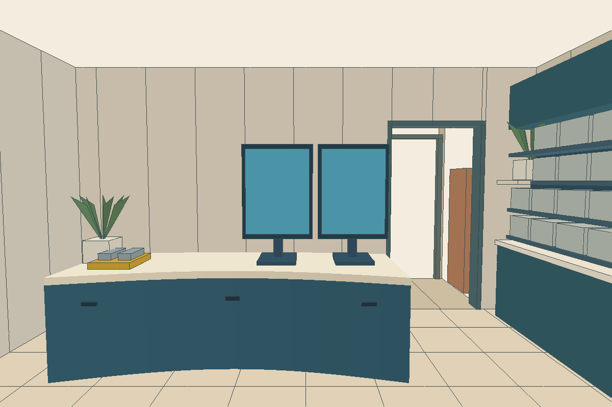
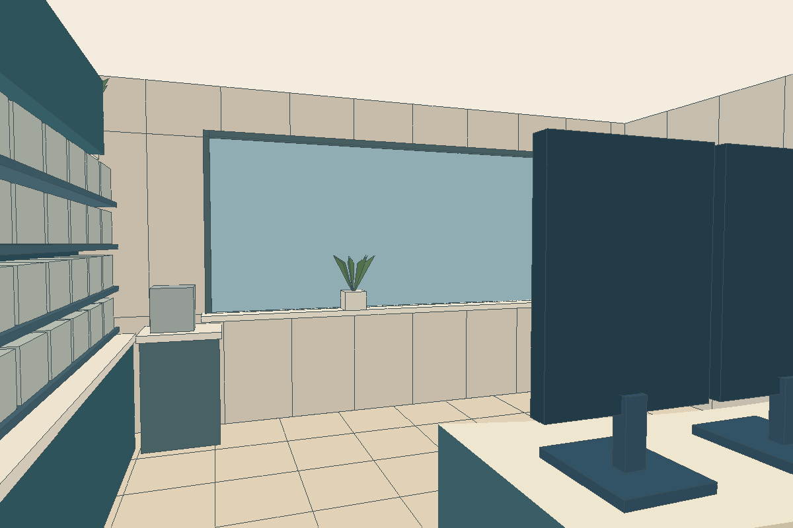

PROPOSAL / EXPLORATION · Ein gemeinsames Modell für vier Ansichten. Farben kennzeichnen Bauteile; Pflanzen und Felsen sind Platzhalter. Keine neue Stilentscheidung.




Maßvorschlag: 4,80 × 5,60 × 3,00 m. Der Gang verläuft links beim Hinausgehen.
Gestalterische Referenz bleibt modulia-workspace-01. Aktuelle SELECTED-Bilder unverändert. Der Plan definiert Lage und Abstände; die einfache Perspektivdarstellung ersetzt noch keine gestalterische Freigabe.